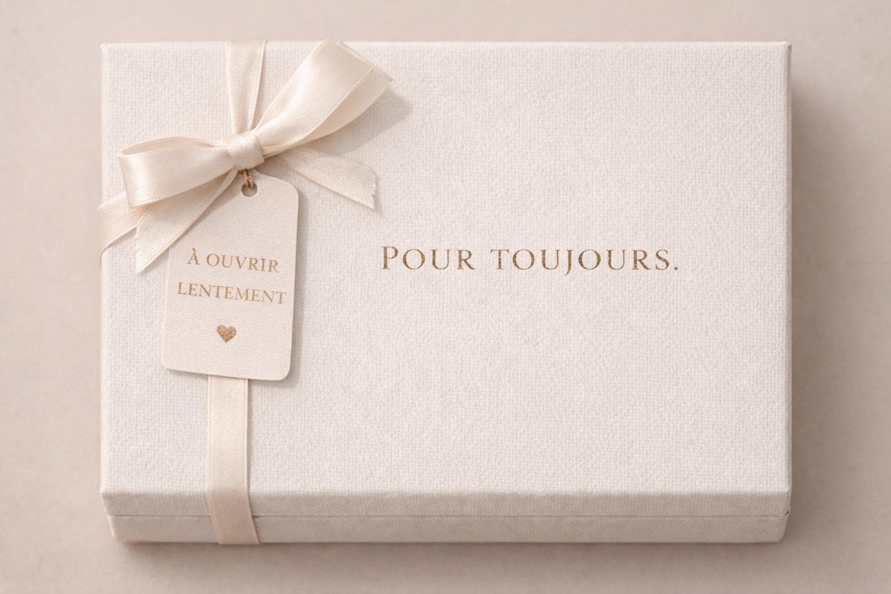
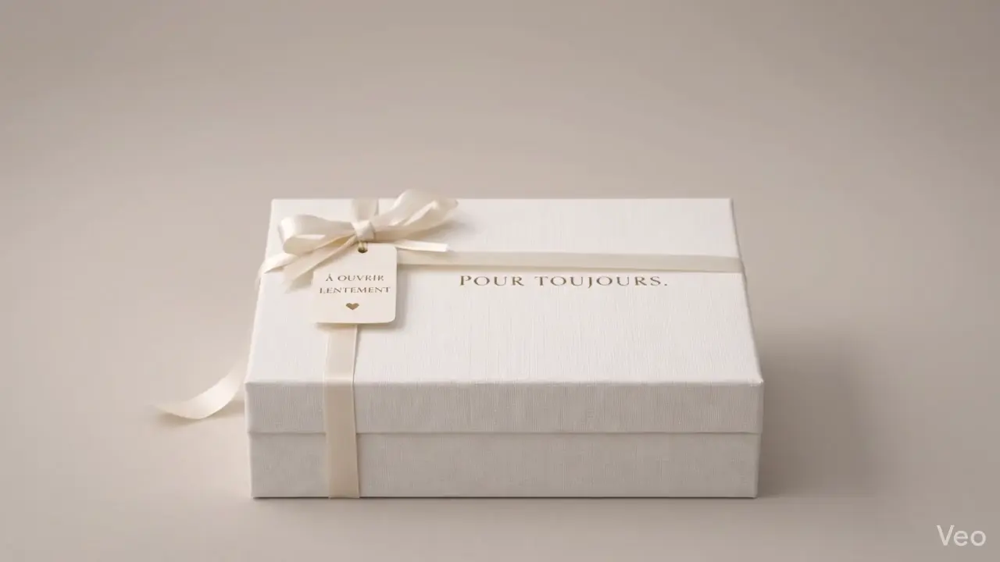

Voix, chanson sur mesure ou voix + musique dans un seul objet.
Cassette audio personnalisée · coffret cadeau premium
Le souvenir personnalisé qui s'écoute et se garde pour toujours.
Transformez une voix, une intention musicale ou les deux en une cassette audio personnalisée, présentée dans un coffret raffiné à offrir, ouvrir et réécouter.
Voix enregistrée, chanson créée sur mesure ou composition mixte: vous choisissez l'intention, nous orchestrons le souvenir.
- Créé sous 48h
- Aperçu avant production
- Écoute et validation avant expédition
Textes, photo, style de coffret et présentation intérieure.
Future séquence scroll prête à intégrer


Ce que vous pouvez personnaliser
- Voix enregistrée
- Chanson créée sur mesure
- Voix + musique
- Texte extérieur et intérieur
- Photo et design de coffret
Le concept, en une phrase
Vous partagez une voix ou une intention. Nous la transformons en souvenir à offrir.
Vous nous confiez un message vocal, une histoire, un moment de vie ou le désir de faire créer une chanson sur mesure. Nous le composons dans une cassette audio personnalisée, présentée dans un coffret pensé comme un véritable objet de mémoire.
Le résultat n'est pas un simple support audio. C'est un cadeau intime, élégant et durable, conçu pour provoquer une émotion dès l'ouverture puis à chaque écoute.
Les 3 créations possibles
Choisissez la forme de souvenir la plus juste pour votre message.
Une seule pièce maîtresse, plusieurs façons de lui donner vie. La configuration détaillée se fera ensuite sur la page produit.
Votre enregistrement vocal
Pour transmettre une voix, des mots, une annonce, un merci, un souvenir de famille ou une déclaration que l'on veut pouvoir réécouter.
Votre chanson créée sur mesure
Vous nous confiez votre intention, votre histoire, le ton souhaité et l'émotion à transmettre. Nous créons une proposition musicale personnalisée rien que pour vous.
La proposition vous est envoyée pour approbation, et jusqu'à 3 révisions sont possibles si vous souhaitez ajuster le résultat.
Voix + musique
La formule la plus immersive: un message vocal porté par une création musicale originale, pour donner au souvenir une profondeur encore plus cinématographique.
Personnalisation de l'objet
Bien plus qu'un audio: un objet cadeau pensé dans ses moindres détails.
Le souvenir se vit autant à l'écoute qu'au moment où l'on ouvre le coffret. Chaque détail participe à la valeur émotionnelle du geste.
- Texte personnalisé à l'extérieur du coffret
- Message intérieur ou dédicace à l'ouverture
- Photo intégrée pour ancrer le souvenir
- 2 à 3 designs de coffret au choix
- Présentations premium adaptées à l'occasion

Comment ça fonctionne
Un processus simple, rassurant et entièrement guidé.
Choisissez votre format de mémoire
Voix enregistrée, chanson sur mesure ou création mixte selon l'émotion recherchée.
Envoyez votre voix ou votre intention
Vous partagez votre fichier ou votre brief créatif, ainsi que vos personnalisations de coffret.
Nous créons sous 48h
Notre équipe compose, assemble et prépare votre souvenir avec un soin éditorial et humain.
Vous écoutez, vous validez, nous produisons
Vous approuvez le rendu avant la fabrication du coffret et l'expédition finale.
Pourquoi ce cadeau laisse une empreinte plus profonde
Parce qu'une voix, une mélodie ou un message personnel ne se remplacent pas.
Beaucoup de cadeaux se regardent. Peu se réécoutent quand on a besoin de revivre un instant, une présence, une intention.
Une cassette audio personnalisée transforme un souvenir en expérience vivante. Elle donne un corps à l'émotion, une matière au lien, une forme durable à ce que l'on ne veut pas laisser se dissiper.
C'est ce qui en fait un présent plus fort qu'un objet simplement joli: il porte une voix, une histoire, un contexte, une chaleur que personne d'autre ne peut reproduire.

Designs de coffret
Des présentations premium pensées pour être offertes dès la première seconde.
Deux à trois univers de coffret permettront de choisir l'atmosphère la plus juste: minimale, signature ou profondément personnelle.


Le geste prend forme
Ouvrez. Écoutez. Ressentez.
Aucun lecteur externe. Tout est intégré à la cassette.

Pour quelles occasions ?
Un même objet, des moments de vie très différents à célébrer.
Anniversaire
Pour offrir autre chose qu'un objet de plus: un souvenir réellement personnel.
Mariage
Un message à deux voix, une chanson dédiée ou une archive émotionnelle du jour J.
Anniversaire de couple
Une manière de faire entendre un lien, pas seulement de le raconter.
Naissance
Pour conserver les premiers mots, une dédicace ou une attention destinée à la famille.
Fête des mères / des pères
Un cadeau sensible, juste et profondément personnel.
Relation à distance
Quand la voix devient une façon de rester proche malgré les kilomètres.
Hommage
Pour faire vivre une mémoire, une histoire familiale ou un message important.
Geste inoubliable
Parce que certaines attentions méritent une forme plus rare et plus durable.
Réassurance
Une expérience premium, claire et encadrée du début à la fin.
Tout est pensé pour rendre le processus simple, rassurant et à la hauteur de l'émotion confiée.
Ils l'ont offert
Des réactions discrètes, sincères et très révélatrices de l'effet produit.
“Je voulais offrir la voix de notre fille à son grand-père. Le coffret était superbe, et surtout le rendu avait une vraie délicatesse. On avait l'impression d'offrir un souvenir déjà précieux.”
“Nous avons choisi la formule voix + musique pour notre anniversaire de mariage. Le fait de pouvoir écouter avant production nous a immédiatement rassurés.”
“Pour une naissance, nous avons ajouté une photo et un texte intérieur. Ce n'était pas juste joli, c'était profondément personnel et prêt à offrir.”
FAQ
Les réponses aux questions que l'on se pose avant d'offrir un souvenir si personnel.
Cette FAQ est pensée pour lever les doutes pratiques tout en rassurant sur la qualité du processus.
Comment envoyer mon enregistrement vocal ?
Après votre commande, vous recevez des instructions simples pour transmettre votre enregistrement. Vous pouvez envoyer une note vocale existante ou enregistrer un message dédié en suivant nos indications.
Comment fonctionne la chanson sur mesure ?
Vous nous expliquez l'intention, l'histoire, le ton et l'émotion à transmettre. Nous créons ensuite une proposition musicale personnalisée pensée pour votre moment.
Puis-je écouter et valider avant la production ?
Oui. Vous recevez un aperçu avant fabrication afin d'écouter, confirmer et valider le rendu final avant l'envoi en production.
Que se passe-t-il si la proposition musicale ne me convient pas ?
Pour l'option chanson sur mesure, jusqu'à 3 révisions sont possibles après réception de la proposition. Le but est d'obtenir un résultat qui vous ressemble.
Puis-je personnaliser le coffret ?
Oui. Selon le modèle choisi, vous pouvez personnaliser le texte extérieur, le texte intérieur et certains éléments de présentation du coffret.
Puis-je ajouter une photo ?
Oui. Une photo peut être intégrée pour renforcer la dimension intime du souvenir et créer une expérience encore plus forte à l'ouverture.
Combien de temps prend la création ?
La création est réalisée sous 48 heures avant validation. Une fois votre accord donné, la production et l'expédition peuvent être lancées.
Le coffret est-il prêt à offrir ?
Oui. Le produit est conçu comme un objet cadeau premium, avec une présentation soignée et une finition pensée pour être offerte dès réception.
Est-ce adapté à un anniversaire, à un couple ou à une naissance ?
Oui. La cassette audio personnalisée convient à de nombreuses occasions: couple, anniversaire, mariage, naissance, famille, relation à distance ou hommage.
Existe-t-il plusieurs designs de coffret ?
Oui. Deux à trois designs premium seront proposés afin de choisir la présentation la plus juste pour votre occasion et votre message.
Prêt à commencer ?
Offrez une voix, une mélodie, une émotion qui restera.
Une seule pièce maîtresse, plusieurs façons de la rendre profondément personnelle. Le détail des choix vous attend sur la page produit.